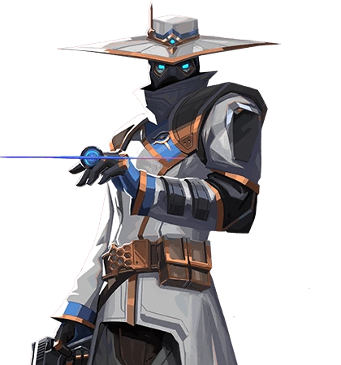

VALORANT!
APRENDA DE UMA VEZ A COMO JOGAR VAVA!
DICAS E TUTORIAIS!
PARA NÂO VIRAR UM KAUAN ANTONIO DA VIDA FERRO 1
APRENDA DE UMA VEZ A COMO SER UM BOM JOGADOR
O Cypher é ÓTIMO pra defender. Use as armadilhas (fios e câmera) para saber onde os inimigos estão e para impedir que entrem no bomb facilmente...
No ataque, você pode usar os fios para evitar ser pego de surpresa por inimigos nas costas. Coloque a câmera para ver onde eles estão antes de entrar no bomb
Não use a câmera no mesmo lugar sempre, mude para confudir os inimigos (IMPORTANTE!)
Cypher é mais cabeça. Use suas habilidades para coletar INFORMAÇÔES e só

AQUELA PERFEITINHA DE KAYO
SAGE DUELISTA (38/10)
AQUELA RAZE MATADORA
APRENDA A ULTAR CERTO PARA NÂO VIRAR UM KAUAN ANTONIO QUE GUARDA A ULT PRO ULTIMO ROUND E AINDA MORRE!
>O Cypher é ÓTIMO pra defender. Use as armadilhas (fios e câmera) para saber onde os inimigos estão e para impedir que entrem no bomb facilmente...
No ataque, você pode usar os fios para evitar ser pego de surpresa por inimigos nas costas. Coloque a câmera para ver onde eles estão antes de entrar no bomb
Não use a câmera no mesmo lugar sempre, mude para confudir os inimigos (IMPORTANTE!)
Cypher é mais cabeça. Use suas habilidades para coletar INFORMAÇÔES e só